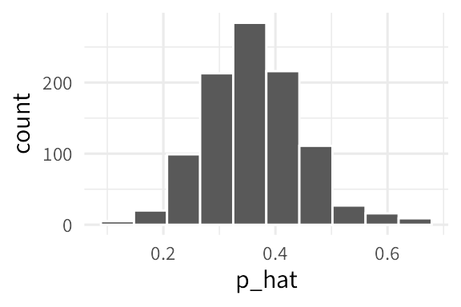
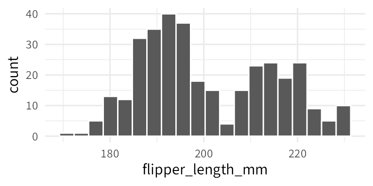
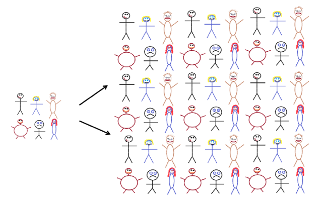
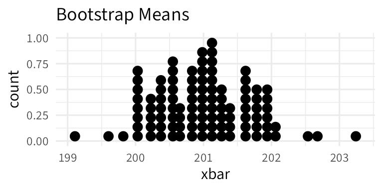

Notes 11: Confidence Intervals + Intro to the Bootstrap
Stat 120 | Fall 2025
Let’s begin with the class proportion from last time: 36.7% of Carleton students are “from the Midwest”, while ____% of our class (who were in attendance) are from the Midwest.
The mean and standard deviation of the sampling distribution are:
# A tibble: 1 × 2
xbar se
<dbl> <dbl>
1 0.349 0.0879In a random class of 32 students, how many would we expect to be from the Midwest?
95% confidence interval using the standard error:
Example: Percent of each country with internet access (StatKey)
CI Misinterpretations
- A 95% CI contains 95% of the data from the population
- I am 95% sure that the mean of the sample will be in CI
- The probability that the parameter is in the CI is 95%
Structure of a CI:
- I am ___ % confident
- that the [population parameter in context]
- is between ____ and ____ [units]
The Bootstrap
So far, we’ve used the population to generate samples and construct sampling distributions. For most situations, this is unrealistic.
Example: Let’s consider our penguin friends. I’m interested in finding a 95% confidence interval for the mean flipper length of all Palmer Archipelago penguins. The mean flipper length is 200.9152 and the standard deviation is 14.0617.

Idea:

Let’s return to our penguins. I’ve made 100 bootstrap samples and found the mean for each one:

The mean of this distribution is 200.9947 and the standard deviation is 0.6988.
The magic of the bootstrap is that it works for any statistic we can compute from our sample! We simply have to follow these steps:
- Generate bootstrap samples:
- Sample from the original sample with replacement
- Use the same sample size as original sample
- Compute the statistic of interest for each bootstrap sample
- Collect the statistics for many bootstrap samples to create the bootstrap distribution
- Treat the bootstrap distribution as the sampling distribution to estimate the standard error
What happens when the bootstrap distribution is not symmetric?